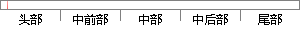

。石墨烯是一种二维晶体
片段位置图

相似结果
相似片段：
学的安德烈·海姆教授和康斯坦丁·诺沃肖洛夫教授通过一种很简单的方法从石墨薄片中剥离出了石墨烯，为此他们二人也荣获2010年诺贝尔物理学奖。 石墨烯是一种二维晶体，由碳原子按照六边形进行排布，相互连接，形成一个碳分子，其结构非常稳定；随着所连接的碳原子数量不断增多，这个二维的碳分子平面不断扩
| 对比库： | WriteCheck云资源库 |
| 来源： | www.bing.com 查看来源 |
| 发布时间： | 2016-04-13 |
| 相似率 | 100% （严重抄袭） |